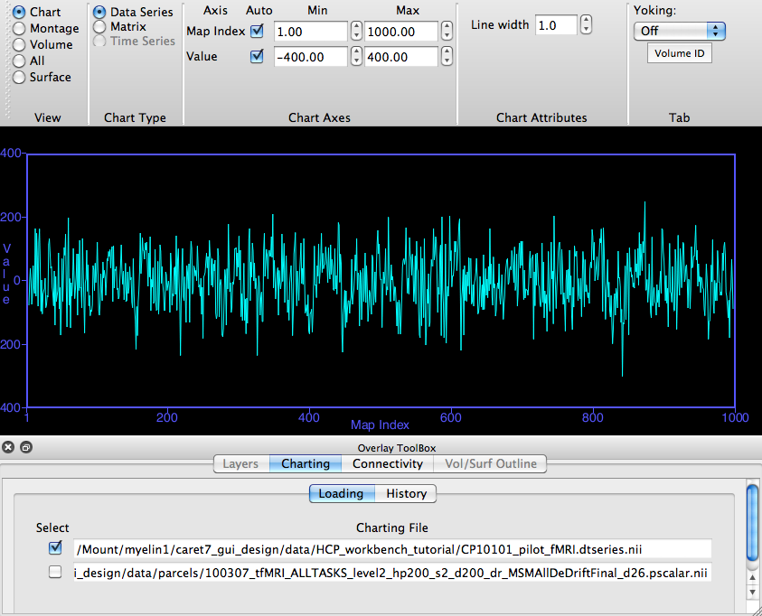

Chart View
Chart View displays 2-dimensional graphs or
matrices of Workbench-chartable files.
Chart Type, determines which kind of
graph is viewed. If one or more Workbench-chartable files are
loaded, one or more Chart Types will be available for selection.
Chartable files for the selected Chart Type are listed and can be
selected for display in the Overlay Toolbox Charting
tab.
Chart Types currently available:
Data/Time
Series (top image) chartable files are graphed
for a brainordinate identified in a non-Chart view Viewing Tab,
showing a data value (y-axis) for each Map Index/unit of time
(x-axis). The following file types are available for Data/Time
Series charting, as long as they contain more than one
map:
* CIFTI
Data Series (.dtseries.nii)
*
CIFTI Parcel Scalar (.pscalar.nii)
*
CIFTI Parcel Series (.ptseries.nii)
*
CIFTI Scalar (.dscalar.nii)
*
Metric (.func.gii, .shape.gii)
*
Volume (.nii, .nii.gz)
Matrix
(bottom image) chartable files:
*
CIFTI Parcel to
parcel connectivity (.pconn.nii) -- matrix
with parcels as the y-axis rows, parcels as the x-axis columns,
and the colored cells indicate the correlation (connectivity)
values between the parcel pair.
*
CIFTI Parcel Scalar (.pscalar.nii) -- matrix
with parcels as the y-axis rows, map indices as the x-axis
columns, and the colored cells indicate the scalar data value
for a parcel/map pair in a particular parcel
(identified in a non-Chart view Viewing Tab).
